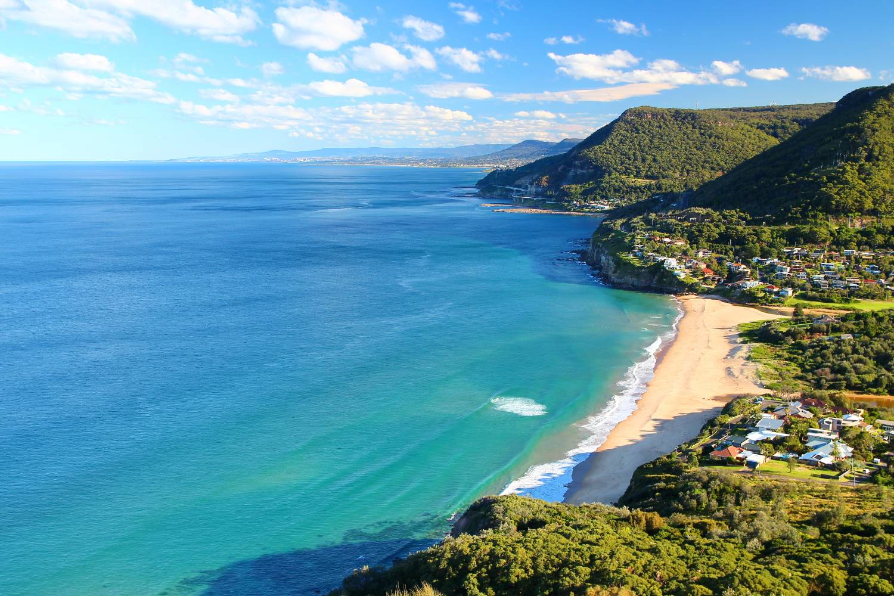
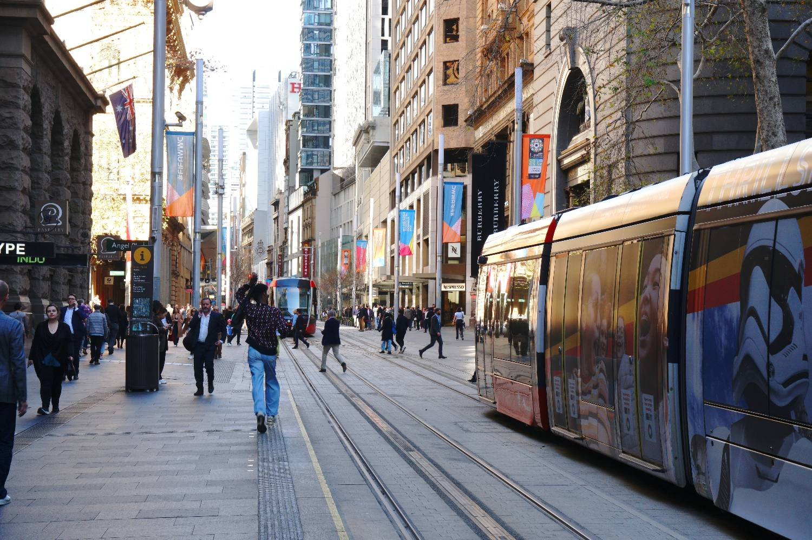
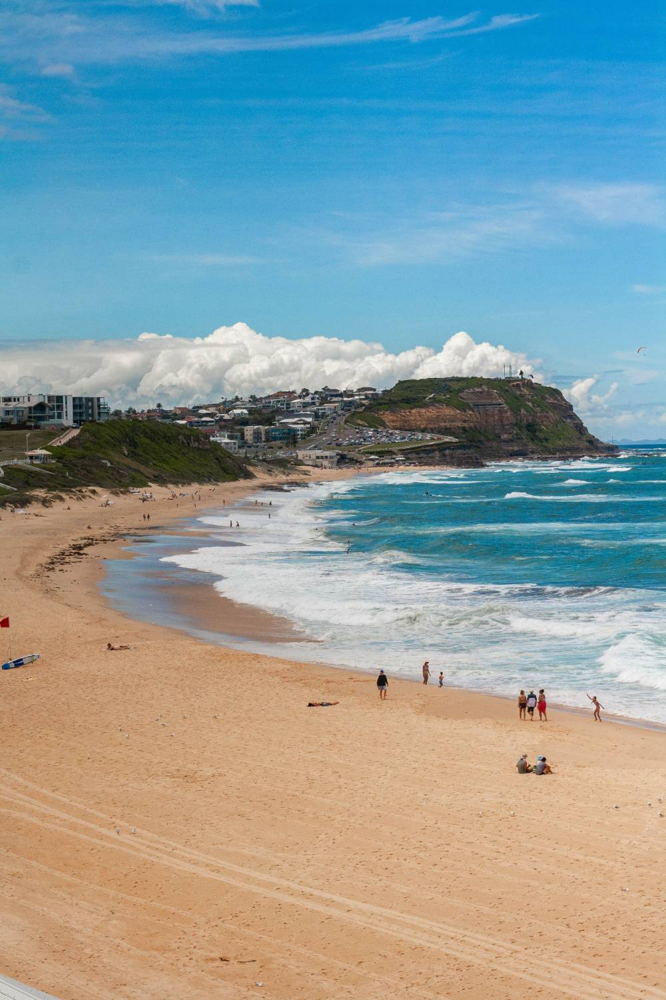
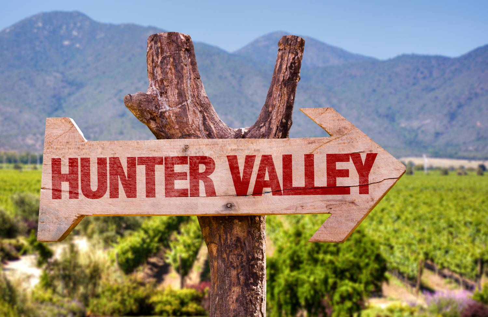

New South Wales
Relocation Guide
A warm welcome, you’re in good hands
Deciding to move your life and career to the other side of the world is a big step, and an exciting one. Whether New South Wales is already home to people you know or a brand-new chapter, I want you to feel supported from the very first conversation.
NSW is Australia’s front door: the harbour city of Sydney, the largest economy and job market in the country, and, beyond it, surf coasts, wine country, world-heritage mountains and even snowfields. It asks a bit more of your budget than the other states, but it gives a great deal back, and its hospitals are among the finest in the southern hemisphere.
This guide walks you through healthcare, visas and registration, finances, housing, schooling and cost of living across the state, then breaks down the main places you might live so you can picture daily life in each. Think of it as the conversation we’d have over coffee, in your pocket, whenever you need it.
Welcome to New South Wales. We’re so glad you’re here, and we’ll be alongside you every step of the way.

"A good move is measured in years, not weeks, so we stay with you long after you land."
Warm regards,
Sophie
Sophie Careem · Founder & Director, Ethicare Resourcing
NSW rewards a plan more than any other state. Sydney is superb but expensive, and the coast, the Hunter and the regional cities offer real value and strong demand. Where you settle shapes your budget, your commute and your lifestyle more than almost anything else.
Read the Cost of Living and Cities sections early. In NSW, choosing the right area, and getting your rental application ready before you land, makes the single biggest difference to how smoothly you settle.
The harbour state
New South Wales is Australia’s most populous state and its largest economy, home to Sydney and to two-thirds of the state’s 8.6 million people, most living along a long, temperate coast.
Go deeperIs Australia right for you and your family?→Why many professionals choose NSW
Candidates often picture Australia as one job market. It isn’t. NSW registers nationally through Ahpra but hires locally through its Local Health Districts, and demand in the Hunter, the Illawarra and rural NSW is strong, often with incentives a headline Sydney salary won’t show.
Ancient country, world city
The Gadigal people of the Eora Nation are the traditional custodians of central Sydney, known as Warrane, part of one of the oldest living cultures on earth, a heritage increasingly woven into NSW life.
NSW is where modern Australia began, and it remains its most multicultural state, with communities from every corner of the world. Sydney is a genuine global city, its harbour, its beaches and its dining among the best anywhere, while Vivid Sydney lights up the winter and the Hunter Valley and Byron Bay draw people from across the country. Beyond the city, the pace softens quickly into coast, farmland and mountains.
Learn the local names early, Warrane (Sydney Cove) and the Country names across the state. Using them warmly is genuinely appreciated and helps you feel part of the community faster.

Getting around
Sydney has one of Australia’s best public-transport networks, and you rarely need a car in the inner city. Beyond the metro area, the state’s scale means driving comes back into the picture, and so do tolls.
Opal card
Trains, metro, buses, ferries and light rail run on the tap-on Opal card, with fares capped at about $50 a week (and roughly $2.80 all day on Sundays). You can also tap on with a contactless bank card.
Driving & tolls
Australians drive on the left. Sydney has the densest toll network in the country, get an E-toll tag before you drive the motorways; weekly toll spend is now capped for eligible trips.
Trains & ferries
Sydney Trains and the driverless Metro reach far across the city, and the harbour ferries are a scenic commute in their own right.
Flying
Sydney Airport links to every capital and regional NSW; the new Western Sydney Airport is opening to add capacity.

You can usually drive on a valid overseas licence for a period after arriving, but you’ll need to transfer to a NSW licence once you’re a resident. Sort an Opal card and an E-toll tag in your first week, the tag saves you the per-trip admin fees on Sydney’s motorways.
A year in the NSW climate
NSW has a genuinely temperate, four-season climate, warm summers, crisp winters and, uniquely among the mainland states, real alpine snow. Remember, the seasons are flipped from the Northern Hemisphere.
Figures are indicative for Sydney, which is warm and humid in summer and mild in winter. The north coast is subtropical; the tablelands and Blue Mountains are cooler with frosty winters; and the Snowy Mountains have a true alpine climate, with a ski season at Thredbo and Perisher from about June to September.
Two things catch newcomers out. First, the UV is strong, sun protection is a year-round habit here, not a summer one. Second, NSW winters are genuinely cool and many homes have limited heating, so budget for warm bedding and a heater for your first winter, a point worth making to family before they arrive.
Healthcare in New South Wales
NSW runs Australia’s largest public health system, universal Medicare cover, more than 220 public hospitals and a strong private sector, delivered through 15 Local Health Districts led by Sydney’s tertiary centres.
Go deeperUnderstanding healthcare in Australia→Royal Prince Alfred & St Vincent’s
Inner Sydney’s premier tertiary referral hospitals, renowned for trauma, transplants and research.
Westmead & Liverpool
Among the country’s largest hospitals, with major trauma and specialist services for Sydney’s fastest-growing regions.
Royal North Shore & Prince of Wales
Leading teaching hospitals on the north shore and in the east, with major emergency and specialist care.
Regional referral hospitals
John Hunter (Newcastle) leads the state outside Sydney; Wollongong, Coffs Harbour, Orange, Tamworth and Wagga Wagga base hospitals anchor their regions.
Eligibility for Medicare usually begins once you hold an appropriate visa. Reciprocal Health Care Agreements give some countries limited Medicare access. Ambulance cover is not automatic in NSW, unlike Queensland there’s a fee unless you hold ambulance cover or a concession, so many people add it to their private health insurance.
Working as a practitioner here
Written for clinicians, not tourists: the things that actually shape your working life and take-home pay.
What to ask about
| Salary packaging | Big tax saving |
|---|---|
| Shift & roster patterns | Penalties vary |
| Public vs private | Different pay & pace |
| Parking & commute | Real cost in Sydney |
| CPD allowance | Time & funding differ |
| Professional indemnity | Check employer cover |
Professional associations
Joining your college or association early helps with CPD, networking and staying current with local practice standards.
Career progression
NSW’s mix of major tertiary, coastal and rural roles means broad experience, and regional posts can accelerate progression.
Public-health and not-for-profit roles let you "package" part of your salary before tax. In a high-cost city like Sydney this matters even more, it can lift take-home pay meaningfully, yet many international staff don’t set it up in their first months. Ask on day one.
Visas & the right to work
Most healthcare professionals arrive on a skilled or employer-sponsored visa. Your Ethicare contact will guide you to the right pathway for your role and circumstances.
Go deeperImmigration & visas for Australia→| Pathway | In short | Typically suits |
|---|---|---|
| Employer-sponsored (482) | An employer nominates you for a skilled role | Those with a job offer |
| Skilled Nominated (190) | State-nominated permanent skilled migration | In-demand occupations |
| Skilled Work Regional (491) | Points-tested pathway tied to regional NSW | Those open to the regions |
| Partner / family | Based on a relationship with a resident or citizen | Family-linked moves |
Visa rules change regularly. Always confirm current requirements with the Department of Home Affairs (homeaffairs.gov.au) and your Ethicare contact before making decisions. The NSW skilled-nomination programs (190 and 491) are run by the state and update their criteria through the year.
Professional registration
Most healthcare professions are regulated nationally through Ahpra, the Australian Health Practitioner Regulation Agency, and its profession-specific boards.
One national register
Once registered with Ahpra you can work anywhere in Australia, including all of NSW, registration is national, not state-by-state.
Qualification assessment
Overseas qualifications are assessed against Australian standards; some roles require bridging programs or exams.
English language
You’ll usually need to evidence English proficiency through an approved test or a recognised pathway.
Start early
Registration takes time, begin gathering documents and references well before you plan to travel.
If a NSW start date slips, it’s nearly always the paperwork. Certified qualifications, references and ID take longer to assemble than people think, so begin the moment Sydney or the regions start to feel real.
Setting up your finances
Getting your finances in order early makes day-to-day life much easier. Most of this can be started before you arrive.
Opening a bank account
The major banks are CommBank, Westpac, NAB and ANZ. Westpac began life in Sydney in 1817 as the Bank of New South Wales, Australia’s first bank. Many let you open online before you arrive, then verify ID in branch with your passport.
Tax File Number (TFN)
Every worker needs a TFN from the ATO. Apply online once you arrive and give the number to payroll so you’re taxed correctly. Without it, you’ll be taxed at the highest rate.
Open your bank account before you fly where you can, having an account ready makes your payroll setup and first rent payment far smoother in those hectic first weeks.
The money set-up, in order
The salary is only half the picture, and in Sydney the bridge between arriving and your first full pay is the part to plan for most carefully. Budget for temporary accommodation, a rental bond (typically four weeks’ rent) plus up to two weeks’ rent in advance, a first car if you need one, and setting up a home. None of it is dramatic, but in a high-cost city it adds up, and planning for it removes almost all of the early stress.
Sophie Careem · Founder & Director
What life costs in NSW
Let’s be honest: Sydney is Australia’s most expensive city, and housing is the main reason. The good news is that the coast, the Hunter and the regional cities cost far less, and a plan makes Sydney very liveable.
Everyday item · approx. price (A$)
| 1 litre of milk | $1.60 – $3.00 |
|---|---|
| Loaf of bread | $3.00 – $5.00 |
| Dozen eggs | $5 – $9 |
| Flat white coffee | $4.50 – $6.50 |
| Mid-range meal for one | $28 – $45 |
| Home broadband | $70 – $100 / mo |
Example monthly budget · one person (A$)
| Rent (room / small 1-bed) | $1,700 – $3,000 |
|---|---|
| Power & water | $160 – $280 |
| Internet | $70 – $100 |
| Transport (Opal cap) | $200 |
| Groceries | $480 – $720 |
| Entertainment | $200 – $420 |
| Estimated total | $2,810 – $4,720 |
10 things nobody tells you before moving to NSW
Where you might live
NSW is more than Sydney. Here’s an orientation to the six main places our healthcare professionals move to, from the harbour city to the coast, the Hunter and the Riverina, each with its own pace, cost and lifestyle.

City, coast or region?
For healthcare staff, the choice isn’t only lifestyle, the coast and the regions often carry the strongest value and, in rural NSW, real incentives.
| If you want… | Consider | Because |
|---|---|---|
| The widest job market | Sydney | Tertiary hospitals, most vacancies |
| Coastal city & value | Newcastle | Trauma centre, affordable, beaches |
| Coast, escarpment & uni life | Wollongong | Illawarra hub, easy Sydney access |
| Family lifestyle by the water | Central Coast | Beaches & lakes, rail to Sydney |
| Subtropical beach living | Tweed Heads | Far north coast, on the QLD border |
| Regional life & incentives | Wagga Wagga | Riverina hub, rural incentives |
Rural and regional roles across NSW, especially in the Riverina, the west and the far north, frequently come with relocation assistance, accommodation support and retention incentives that a headline Sydney salary won’t show, and your money stretches much further. If you’re open to the regions, tell us early, it can change the maths considerably.
Finding a place to live
From Sydney apartments to coastal homes and regional towns, where you live in NSW shapes your commute and your budget more than anywhere. In a tight market, preparation wins.

Rentals move quickly, especially in Sydney, where you should be ready to apply on the spot. You’ll usually apply with ID, references and proof of income, then pay a bond (typically four weeks’ rent) lodged through Rental Bonds Online, plus up to two weeks’ rent in advance. Many newcomers rent short-term first to learn an area. The main sites are realestate.com.au (largest) and domain.com.au.
Choosing your area, the order that saves the most stress
Utilities & getting set up
Power & gas
Choose a retailer (AGL, Origin, EnergyAustralia and others); the networks are Ausgrid, Endeavour and Essential. Set up on move-in.
Water
Sydney Water or your regional provider; if renting, most water charges are the landlord’s.
Internet
NBN via Telstra, Optus, TPG or Aussie Broadband.
Setting up home
Kmart, IKEA and Bunnings furnish a first home fast; Marketplace for second-hand.
No Australian rental references? Bring landlord references from home, proof of income and savings, and your job offer, all as clean PDFs ready to send. In Sydney’s market, a complete, instant application often beats a longer local history.
Choosing where to live
For many healthcare professionals, the job is only half the decision. The other half is where your family will settle well. Schools, commute, housing cost and lifestyle are best weighed together. Here’s a practical way to think it through.
Schools often come first
Access to a government school is usually tied to where you live. Popular schools can be pinned to an exact address, catchments can change street by street, and out-of-area places aren’t guaranteed. If you have children, check the catchment before you sign a long-term lease. Independent, Catholic and faith schools offer more flexibility, but usually charge fees.
Your commute still matters
Sydney is vast, and 'nearby’ suburbs can be an hour apart at peak times. Trains, metro, buses and ferries are excellent in and around the city, but check the realistic door-to-door time to your hospital at shift-change hours, whether parking exists, and the cost of tolls if you’ll drive the motorways.
The order that usually works best
A simple sequence that keeps the big decisions in the right order.
- 1Confirm your likely work site.
- 2Shortlist suitable school options if you have children.
- 3Check the catchment maps for those schools.
- 4Compare commute times to work at shift hours.
- 5Review rental availability and cost.
- 6Rent short-term first where you can.
- 7Choose a longer-term suburb once you know the area.
Sydney at a glance, by area type
If you’re relocating with children, I’d strongly recommend researching schools before you sign a long-term lease. A slightly longer commute can be well worth it if it means your children are settled in a school and community that feels right for them.
From Sophie’s experience supporting healthcare professionals through international relocation, the happiest moves are rarely just about the job. They’re about the whole household settling well, schools, commute, community and lifestyle all play a part in whether a move feels right for the long term.
Before you sign a lease
- ✓Is the property inside the school catchment you need?
- ✓How long is the commute to work at shift times?
- ✓Is parking available, at home and at work?
- ✓Is public transport realistic for your hours?
- ✓Are supermarkets, GP clinics and childcare nearby?
- ✓Does the area feel right for your family?
- ✓Would temporary accommodation be wiser while you decide?
Groceries, food & community
The essentials in one place, the big chains, the budget picks, and where NSW’s many communities find the flavours of home, this is one of the most multicultural states on earth.
The big chains
Woolworths & Coles for full-range everywhere; ALDI for the cheapest weekly shop; IGA and independents for neighbourhood top-ups, vital in regional towns.
Flavours of home
Cabramatta and Bankstown for Vietnamese and South-East Asian; Lakemba and Auburn for Lebanese, Turkish and Halal; Harris Park for Little India; Eastwood and Hurstville for Chinese and Korean.

Bring your own bags, lightweight single-use plastic bags are banned across NSW, and most people keep a few reusable ones in the car for exactly this reason.
Sydney has Australia’s widest range of specialist food. Halal butchers and grocers are easy to find (Lakemba, Auburn, Bankstown); kosher supplies cluster in the eastern suburbs (Bondi, Rose Bay) around the country’s largest Jewish community; and South African, British and every Asian and Middle-Eastern staple is well stocked. In the regional centres it’s more limited, Newcastle, Wollongong and the larger towns have good halal ranges, but dedicated kosher supplies are largely Sydney-based, so many regional families stock up on a city trip or order online.
Religion & places of worship
Australia has no state religion and law protects freedom of belief. NSW is the country’s most religiously diverse state: at the last census around a third of residents reported no religion, Christianity remained the largest faith, and Islam, Hinduism, Buddhism, Sikhism and Judaism are all large and well established, most strongly across Greater Sydney, with active communities in the regional centres too.
Most communities list service and prayer times online and warmly welcome newcomers, often one of the quickest ways to build a support network after you arrive.
The main faiths & where to find them
Christianity
Catholic, Anglican, Uniting, Pentecostal and Orthodox churches statewide. Landmark cathedrals include St Mary’s (Catholic) and St Andrew’s (Anglican) in Sydney.
Islam
One of Australia’s largest Muslim communities, with major mosques including Lakemba, plus mosques and musallas across the suburbs and in Newcastle, Wollongong and beyond. See the Muslims NSW / ANIC directories.
Hinduism
The Sri Venkateswara Temple at Helensburgh and temples across western Sydney serve a large community, with festivals through the year.
Buddhism
Many temples and centres, including the Nan Tien Temple near Wollongong, the largest Buddhist temple in the southern hemisphere.
Sikhism
Gurdwaras across Sydney, including in the west and south-west, welcome worshippers and visitors, with community kitchens (langar) open to all.
Judaism
Australia’s largest Jewish community, centred on Sydney’s eastern suburbs, with synagogues, schools and kosher supplies, plus the Sydney Jewish Museum.
By location, what you’ll find near you
A guide to the main faith communities in each city in this guide. Sydney has the fullest range; the regional centres focus on Christian churches and a local mosque.
| City | Places of worship you’ll find |
|---|---|
| Sydney & Greater West | Churches of every denomination, many mosques, Hindu and Swaminarayan temples, gurdwaras, Buddhist temples and synagogues |
| Newcastle | Christian churches of every kind, several mosques, and a growing range of other faiths |
| Wollongong | Christian churches, a mosque, and the Nan Tien Buddhist temple nearby |
| Central Coast | Christian churches; nearest mosques and temples in northern Sydney |
| Tweed Heads & far north coast | Christian churches and a local mosque; other faiths mainly served from the cities |
If regular worship matters to you, factor it into where you settle. In Sydney it’s rarely an issue, but in the regions your nearest mosque, temple or gurdwara may be further away, worth confirming alongside schools and your commute.
Harbour, coast, mountains & snow
Few places pack in this much variety, world-city harbour, endless surf coast, world-heritage mountains, wine country and, in winter, real snow, much of it within a couple of hours of Sydney.
Go deeperLiving & thriving in Australia→
Ten things not to miss
Pace yourself, you don’t need to see it all in the first month. The best discoveries come from locals at work, so ask your new colleagues where they escape to on weekends, whether that’s the coast in summer or the snow in winter.
Schooling & family life
NSW offers a full range of early childhood education, schools and universities, run by the state’s Department of Education. The school year runs late January to mid-December across four terms, a flip from the Northern Hemisphere calendar worth planning around.
Go deeperEducation & schools in Australia→Early childhood
Long daycare, preschool and family day care for ages 0–5, with subsidies. Preschool is the year before Kindergarten.
Primary
Kindergarten (first year) through Year 6, across public, Catholic and independent schools.
Secondary
Years 7–12, ending with the Higher School Certificate (HSC), leading to university or training.
Tertiary
The Universities of Sydney, UNSW, UTS, Macquarie, Newcastle and Wollongong, plus TAFE NSW across the state.
Public school fees for visa-holder families
Handled by the NSW Department of Education’s Temporary Residents Program, and, as in most states, many healthcare families are exempt.
| Situation | What you pay |
|---|---|
| 482 holder in an occupation on the MLTSSL / relevant skills list | Exempt from tuition (small application fee) |
| 482 family in an eligible regional NSW postcode | May qualify for a regional exemption |
| Where tuition does apply (flat annual, by year level) | $5,600–$6,800 (indicative) |
| New Zealand citizens | Enrol as locals, no tuition fee |
NSW’s school-fee rules are more favourable for clinicians than they first appear. Dependants of 482 visa holders whose occupation sits on the Medium and Long-term Strategic Skills List, which covers many nursing, medical and allied-health roles, are exempt from state-school tuition, paying only a modest application fee. There’s also a separate exemption for 482 families living in eligible regional postcodes, and income-based waivers where fees do apply. Confirm your occupation on your visa grant, and note that education costs can sometimes be salary-packaged.
School catchments come first
For NSW public schools, your home address determines your local-intake (catchment) school, children inside the zone are guaranteed a place, while out-of-area places depend on capacity, and popular schools can be heavily oversubscribed. Boundaries can run street-by-street, so always check the exact address before you sign.
For families, the school decision usually leads the housing decision here, deciding it first prevents an expensive mid-year move.
Employment for your partner
A move only works if it works for the whole family. The good news: on most skilled and employer-sponsored visas your partner is included with full work rights, free to take any job, full or part-time, with any employer.
Work rights come as standard
Partners added to a 482, 186, or skilled 189/190/491 visa generally have unrestricted work rights, no separate employer sponsorship needed. Always confirm the exact conditions on your grant letter.
The country’s biggest job market
NSW is Australia’s largest economy, with demand across healthcare, education, finance, construction, technology, hospitality and professional services, strongest in Greater Sydney, with real opportunities in the regions too.
Helping your partner land work
Whether a partner settles into work often decides whether the whole move works, so we treat it as part of the plan from day one. Tell us early what your partner does; if they’re also in healthcare, we can frequently help them directly in NSW.
Your relocation timeline
A simple countdown from decision to arrival, so nothing important gets left to the last minute.
Key numbers & contacts
Emergency & health
Lifeline 13 11 14 · Police (non-urgent) 131 444
Everyday services
The clinicians who arrive in NSW calm are the ones who opened the registration file a year ahead. The rest can be quick, but the paperwork keeps its own clock.
We guide you through every stage
Relocating overseas can feel overwhelming. From the first conversation to long after you arrive, we’re here to support you, the same six-step journey you’ll find on our website.
Discovery call
Understanding your goals, your family situation and whether Australia or New Zealand may be the right fit.
Eligibility & registration
Assessing registration requirements and helping you understand your options clearly.
Opportunities & interviews
Discussing locations, employers and salaries, then preparing you for interviews and what employers look for.
Offer & decision support
Helping you evaluate opportunities and make the decision that’s right for you.
Visa & relocation guidance
Supporting you through the practicalities of moving overseas.
Settling in
Ongoing support as you begin your new life and career, long after you arrive.
Thank you for taking the time to read this guide.
Moving overseas is one of the biggest decisions you’ll ever make, and I know it can feel exciting and daunting in equal measure. My hope is that this guide has helped you feel a little more informed and a little more confident about the journey ahead.
Whether you choose to work with Ethicare or not, I genuinely wish you every success in your new adventure.
With warmth,
Sophie
Sophie Careem · Founder & Director, Ethicare Resourcing